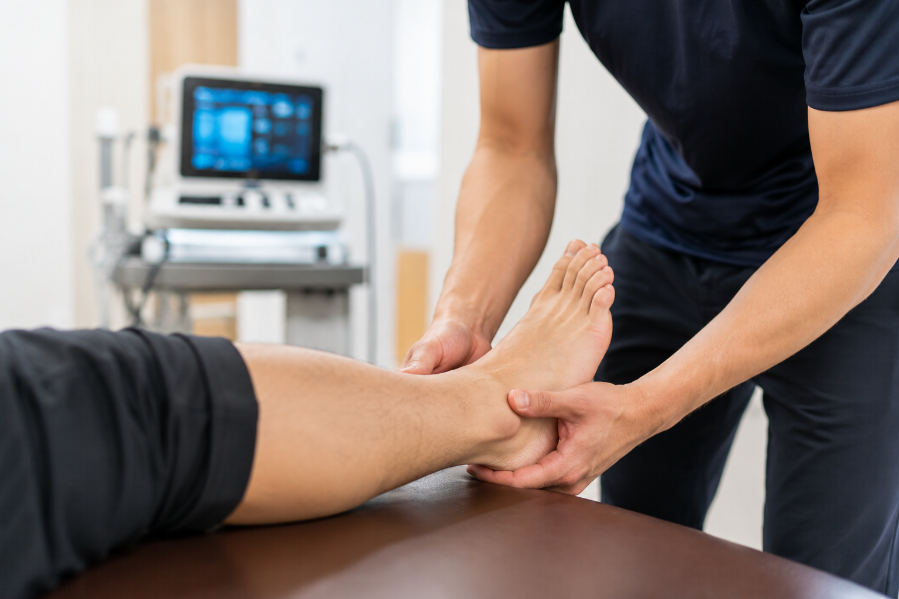

足首の捻挫で「2週間安静」と言われたあと、
よくいただく2つのご相談です。
こんなお悩みはありませんか？
① 試合まで時間がない。早く動けるようにしたい。
② 安静したのに、痛みが引かない。
どちらも、答えは同じです。
とにかく、できるだけ早く
処置を始めることが大事です。
受傷直後から微弱電流を流すと、痛みや腫れの引きが早まり、回復のスタートが大きく変わります。「安静してから」では遅いことも。痛めたら、その日のうちにご相談ください。

なぜ「早く」が大事なのか
早く処置を始めるほど痛み・腫れが早く引き、早く正しく歩けるようになります。歩ければ関節・筋肉・血流が動き出し、回復が一気に進みます。
逆に安静だけで過ごすと、靭帯以外（動き・筋力・バランス・感覚）の回復が遅れてしまいます。
痛みが引いても、終わりではありません
足首には、身体の位置を脳に伝えるセンサーがあります。捻挫でこの働きが落ちると、また同じ場所を捻りやすくなります。
当院では感覚・バランス・足部の機能まで整え、「もう一度、思い切りプレーできる状態」を目指します。
まとめ
捻挫は、早く処置を始めることがいちばんの近道です。①②どちらの方も、迷ったらまず早めにご相談ください。